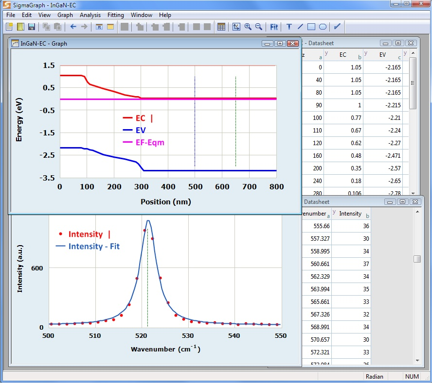
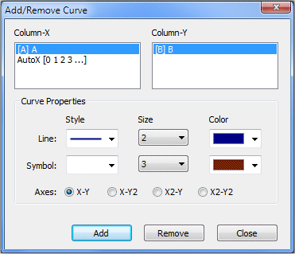
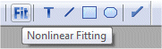
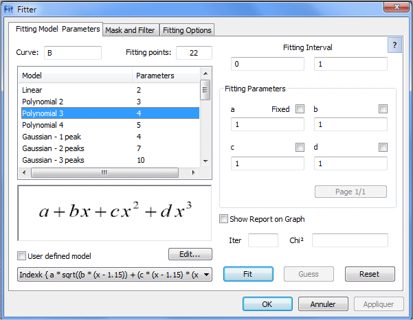
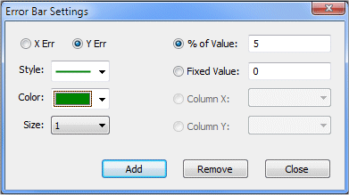
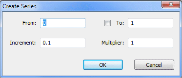
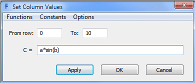

|
||||||
|
SigmaGraph is a data plotting and analysis software designed to be lightweight, reliable and easy to use. SigmaGraph runs on Windows XP, Vista and Windows 7/8/10. SigmaGraph offers almost all the functionality needed by scientists and engineers: editable datasheets (column properties, create series, set column values by using any mathematical expression, show column statistics, import/export from/to ASCII file, mask and unmask cells, printing, etc.); scientific graphing with a complete control of the graph (line/symbol style, colors, fonts, legends, axis properties, grid, tick, labels, scale, auto scale, log/linear scale, zoom in/out, copy format to another graph, export as raster or vector image, printing, graph templates, etc.); curve fitting (24 models including linear, polynomial, exponential, Gaussian (up to 5 peaks), Lorentzian (up to 5 peaks), Pearson VII, logistic, power, etc.); error bars (percentage, constant or any user defined data); drawing tools (line, rectangle, ellipse); mathematical console; powerful scripting engine; etc. New in SigmaGraph v2.6: • Enhanced Lua scripting code editor with syntax highlighting, line numbering, markers (bookmarks), code completion, etc. • New data importing options • Help system redesigned (integrated HTML Help and PDF) • New fitting models (multi-peak Lorentz and Gauss) • User interface enhancements • Performance optimization • etc.
SigmaGraph is now open-source and released under the MIT license since its version 2.6.10. unzip the portable version (sigmagraph.zip) in any location (USB key for example) and run SigmaGraph.exe in the bin directory. The SigmaGraph package contains two executables in the bin directory: · SigmaGraph.exe : main SigmaGraph component. · SigmaConsole.exe : mathematical console.

2 Importing and analyzing data Click the ‘Open’ button (in the main toolbar) and select the file to be imported.
The Import ASCII dialog appears, giving you the possibility: (i) To select the delimiter (TAB, SPACE or ;) (ii) To set the number of rows to skip at the beginning of the file. (iii) To set the number of rows to read from the file. (iv) To select whether or not to read titles into the datasheet. When ready, press ‘OK’ to import the file content into a new datasheet. 2.2 Creating a Line/Scatter Graph To plot the imported data: (i) Click the ‘Add Curve’ button (or click the ‘Graph/Add Curve’ menu) and select the X and Y columns to be plotted. You can change the column properties (and modify the column type: X or Y…): right click and choose ‘Properties’. (ii) Set the line and symbol style and color. (iii) Click the ‘Add’ button. And close the ‘Add Curve’ dialog. You can choose the curve axes by clicking the X-Y, X-Y2, X2-Y or X2-Y2 button. You can modify all the graph properties (curve style, colors, fonts, axis, scale, etc.) in the ‘Graph Options’ dialog by clicking the ‘Graph Options’ button in the toolbar.  To analyze the curve previously created, you can use the SigmaGraph fitting functionality (in this guide, we are using the Lorentz peak function): (i) Click the ‘Fit’ button and choose the Lorentzian model (or click the ‘Fitting/Lorentzian’ menu). Set the fitting number of points to 50. Click the ‘Show Fitting Report on Graph’ button (in order to print out the fitting result on the graph window).  (ii) The model used in this guide (Lorentz peak function) has four parameters: a, b, c and d. In order to calculate quickly and precisely the best estimation of these parameters values, the fitting algorithm needs an initial guess. This can be done automatically for the Lorentzian model. Simply click the ‘Guess’ button. When done, click the ‘Fit’ button.  (iii) Press ‘OK’ to finish. The fitting curve will be plotted and the parameters values will be printed out on the graph window. You can view the fitting datasheet by clicking the ‘View/Fit Datasheet’ menu. You can add error bars to your data:  (i) Click the ‘Graph/Errors Bars’ menu. In the ‘Error Bar Settings’ dialog, click the ‘Y Err’ and ‘Fixed Value’ buttons. Set the fixed value to 0.4. (ii) Choose the error bars line style, size and color (iii) Click ‘Apply’ and close the dialog. The error bars are added to your graph. You can export graph in EMF (Enhanced Metafile) or SVG (Scalable Vector Graphics) format: click the ‘File/Export Graph’ menu (or ‘File/Save As’), choose the file type and name and press ‘OK’.
To plot a mathematical function: (i) Create a new document by clicking the ‘New’ button in the main toolbar. A new datasheet will be created, with two blank columns. Right click the first column (A) and choose ‘Create Series’. Set the range from 0 to 1 with 0.1 as increment.  (ii) Right click the second column (B) and choose ‘Set Column Values’. Write the formula as shown is the figure, and press ‘Apply’ and then ‘OK’.  (iii) To plot the function, right click the second column (B) and choose ‘Add/Remove Curve’. Press ‘Add’ and then ‘OK’.
To add error bars to your data, click the ‘Graph/Errors Bars’ menu. In the ‘Error Bar Settings’ dialog, click the ‘X Err’ or ‘Y Err’ to add error bars to the X data or the Y data. You can choose to fix the error value by clicking the ‘Fixed Value’ button, or give the error percentage by clicking the ‘% of Value’ button. Then set the fixed or percentage value. You can also select one existing error column by clicking on ‘Column X’ or ‘Column Y’ and selecting the column you want. You can choose the error bars line style, size and color. When ready click ‘Apply’ and close the dialog.
To export datasheet content in ASCII file, select ‘File/Export Data’ menu, choose the file and OK.
You can export graph in EMF (Enhanced Metafile) or SVG (Scalable Vector Graphics) format by clicking the ‘File/Export Graph’ menu.
To print a datasheet or graph, select ‘File/Print’ menu or click the ‘Print’ toolbar button.
To save the active document (datasheet, graph, note, and so on), select ‘File/Save’ menu or click the ‘Save’ toolbar button (or CTRL+S). The SigmaGraph file extension is sid. To open a SigmaGraph document, select ‘File/Open’ menu or click the ‘Open’ toolbar button (or CTRL+O).
SigmaGraph runs on PC with Windows™ XP, Vista or Windows 7/8/10 installed. The basic hardware requirements are: · Pentium or better microprocessor. · 256 MB RAM. · 5 MB of hard disk space. · VGA monitor with 800x600 or higher resolution. http://www.hamady.org sidi@hamady.org Copyright(C) 1997-2020 Pr. Sidi HAMADY All rights reserved. http://www.hamady.org SigmaGraph is protected by copyright laws and international copyright treaties, as well as other intellectual property laws and treaties. Sidi Ould Saad Hamady expressly disclaims any warranty for SigmaGraph. SigmaGraph is provided ‘As Is’ without any express or implied warranty of any kind, including but not limited to any warranties of merchantability, noninfringement, or fitness of a particular purpose. |
||||||
|